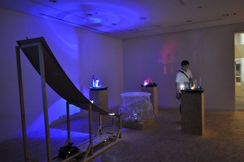
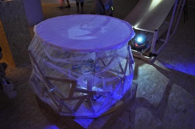

event
2016/09/11 あいちトリエンナーレ2016ツクロッカ 無事終了しました！

あいちトリエンナーレ2016ツクロッカ、無事終了しました。
こちらは、会場風景です。

こちらは、トリンポリンです。
ネコのサーカスのトランポリンで卵から孵った小鳥が、 トランポリンで遊んでいる様子を表現しました。
隣の作品のネコが滑り台から一番下に降りてきた時に、 スイッチが入って作品が動きます。
ですが、ネコが降りてきた時に、横にずれたりして、 スイッチがうまく入らないことがありました。
ネコのサーカスのトランポリンで卵から孵った小鳥が、 トランポリンで遊んでいる様子を表現しました。
隣の作品のネコが滑り台から一番下に降りてきた時に、 スイッチが入って作品が動きます。
ですが、ネコが降りてきた時に、横にずれたりして、 スイッチがうまく入らないことがありました。

こちらは、復活した玉のりネコです。
玉乗りの演目が無くなったネコのサーカスに虹色ネコが来て、 見事玉乗りを成功させた様子を表現しました。
玉乗りの演目が無くなったネコのサーカスに虹色ネコが来て、 見事玉乗りを成功させた様子を表現しました。